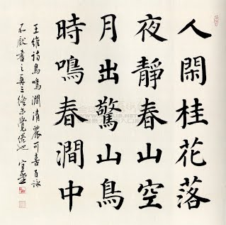
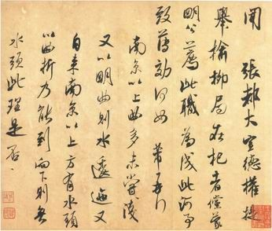

ลายมือตัวอักษรจีน
ลายมือตัวอักษรจีน ในภาษาจีนเรียกว่า 笔迹 (bǐjì - ปี่จี้) หมายถึง ลักษณะหรือรูปแบบตัวอักษรจีนที่เขียนขึ้นด้วยมือมนุษย์ ไม่ว่าจะเป็นการใช้ปากกา ดินสอ หรือพู่กันจีน ซึ่งจะมีความแตกต่างจาก ตัวพิมพ์ (Typeface)ที่อยู่ตามหนังสือหรือหน้าจอคอมพิวเตอร์อย่างสิ้นเชิง เนื่องจากลายมือจะมีความยืดหยุ่น ความพริ้วไหว ลำดับการลากเส้น และเอกลักษณ์เฉพาะบุคคลเข้ามาเกี่ยวข้องลายมือตัวอักษรจีนสามารถแบ่งออกเป็นกลุ่มใหญ่ๆ และมีรายละเอียดที่สำคัญดังนี้1.รูปแบบของลายมืออักษรจีน อักษรข่ายซู (楷书 - Kǎishū) หรือ ตัวบรรจง
2.อักษรซิงซู (行书 - Xíngshū) หรือ ตัวหวัดแกมบรรจง
3.อักษรเฉ่าซู (草书 - Cǎoshū) หรือ ตัวหวัด